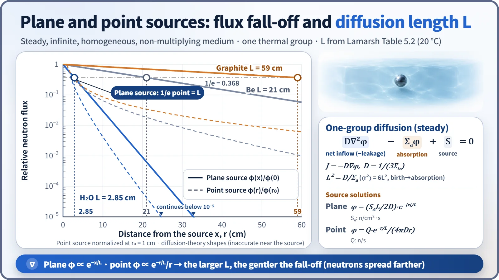
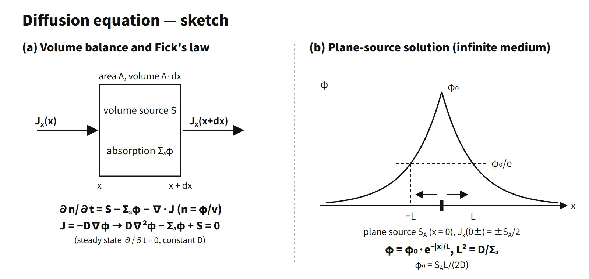

Reactor Physics & Kinetics · C-RX-018
One-Group Neutron Diffusion Equation — Put Fick's Law into the Neutron Balance and the Diffusion Length L Sets the Distribution
Neutron balance plus Fick's law, lumped into one energy group: boundary conditions, source solutions, L² = D/Σa = ⟨r²⟩/6 and keff = k∞/(1 + L²B²).
The one-group neutron diffusion equation substitutes Fick's law J = −D∇φ into the neutron balance (production − absorption − leakage = rate of change) and, by lumping all neutrons into a single energy group, gives the spatial and time distribution of the neutron flux φ.
(1/v)·∂φ/∂t = D∇²φ − Σaφ + S
In steady state it becomes ∇²φ − φ/L² = −S/D with L² = D/Σa; with the fission source νΣfφ/k it becomes ∇²φ + B²φ = 0, the starting point of criticality calculations.
Principle and mechanism
Derivation: one line of balance, one line of Fick's law
In any volume V, the rate of change of the neutron population = production rate − absorption rate − leakage rate. Leakage is the net outflow through the surface, ∮J·n dA, which the divergence theorem turns into ∫∇·J dV. In differential form, ∂n/∂t = S − Σaφ − ∇·J, with n = φ/v.
Substituting Fick's law J = −D∇φ and taking D as uniform gives the diffusion equation above. The diffusion coefficient is D = λtr/3 = 1/(3Σtr), with Σtr = Σs(1 − μ̄) and μ̄ = 2/(3A). Note that its unit is cm, unlike the diffusion coefficient of chemistry (cm²/s).
Physical meaning of each term
| Term | Meaning | Unit |
|---|---|---|
| (1/v)∂φ/∂t | Rate of change of neutrons per unit volume | n/cm³·s |
| D∇²φ = −∇·J | Net inflow (negative of leakage); the more sharply φ curves, the larger the leakage | n/cm³·s |
| −Σaφ | Absorption reaction rate (capture + fission) | n/cm³·s |
| S | Production rate: external source or fission source νΣfφ (νΣfφ/k in criticality calculations) | n/cm³·s |
Why there is no decay term. The mean lifetime of a free neutron is about 878 s (half-life about 10 minutes). The coefficient of the decay loss rate φ/(vτn) at 2,200 m/s is 1/(2.2×10⁵ × 878) = 5.2×10⁻⁹ cm⁻¹. That is 2.6×10⁻⁷ times Σa of light water (0.0197 cm⁻¹), and even compared with graphite, the weakest absorber (2.4×10⁻⁴ cm⁻¹), it is only 2×10⁻⁵ times. A thermal neutron lives for little more than 10⁻⁴ s and has almost no time to decay.
Why there is no medium-motion term. Core coolant velocity is a few m/s (typically about 5 m/s), about 0.2 % of the thermal-neutron speed of 2,200 m/s. Neutron transport is dominated by flight and scattering, so the advection term ∇·(uφ/v) is neglected. In systems where the fuel flows, such as molten-salt reactors, however, the delayed-neutron precursors move with the medium and an advection term enters the precursor equations. It is worth stating clearly that this concerns the precursor equations, not the neutron equation.
Limits of validity
Fick's law is the P1 approximation: scattering is nearly isotropic and φ varies slowly over a mean free path. It is therefore inaccurate:
- in strongly absorbing media (where Σa is not small compared with Σs, e.g. inside control rods);
- within about three mean free paths of sources, surfaces and interfaces (light water λtr = 3D ≈ 0.48 cm, graphite about 2.5 cm);
- where scattering is strongly anisotropic (partly corrected through Σtr).
The one-group model also lumps the energy dependence into one group. In light-water reactors the Fermi age τ ≈ 27 cm² is larger than L² = 8.1 cm², so leaving out fast leakage underestimates leakage.
Boundary conditions
- Physical conditions: φ is real, non-negative and finite (except at source singularities); dφ/dx = 0 on a symmetry plane.
- Free surface: φ = 0 not at the actual surface but at the extrapolated boundary, d = 0.71λtr = 2.13D (light water 0.34 cm, graphite 1.79 cm). The Marshak approximation (incoming partial current J⁻ = 0) gives 2D.
- Interface: φ continuous and normal current continuous (DA·dφA/dx = DB·dφB/dx). If D differs, the slope of φ has a kink.
- Source conditions: plane source lim J(x→0⁺) = S/2; point source lim 4πr²J(r→0) = S.
Infinite-medium source solutions and the diffusion length
Solving ∇²φ − φ/L² = 0 outside the source and removing the exponentially growing term with the finiteness condition as r→∞ gives:
- Plane source S (n/cm²·s): φ(x) = (SL/2D)·e−|x|/L
- Point source S (n/s): φ(r) = S·e−r/L/(4πDr)
Using the point-source solution to compute the mean square straight-line distance to the absorption point gives ⟨r²⟩ = 6L². L² is one sixth of the mean square straight-line ("crow-flight") distance from a neutron's birth point to its absorption point; it is not the length of the actual zigzag path. From Lamarsh Table 5.2 (20 °C), L is 2.85 cm for light water, 21 cm for Be, 59 cm for graphite and 97 cm for heavy water. For a light-water point source of S = 10⁶ n/s, at r = 10 cm, φ = 10⁶·e−3.51/(4π×0.16×10) ≈ 1.5×10³ n/cm²·s.

On the semi-log plot the plane source is a straight line (slope −1/L in ln φ), and the distance over which it falls by 1/e is exactly L. The point source falls faster because geometric spreading (1/r) is added. In light water the plane-source flux falls to about 10⁻⁴ of its value only 26 cm away, while in graphite it is still 0.36 at 60 cm.
Critical form: deriving keff
Replacing the source with the fission source gives D∇²φ − Σaφ + (1/k)νΣfφ = 0. The fundamental mode of a bare reactor satisfies ∇²φ = −Bg²φ; substituting:
- −DBg² − Σa + νΣf/k = 0 → k = k∞/(1 + L²Bg²), with k∞ = νΣf/Σa
- 1/(1 + L²Bg²) is the thermal non-leakage probability
In the thermal-group diffusion equation where the thermal source is "fast neutrons that have finished slowing down" (age theory), k = k∞·e−τB²/(1 + L²B²); modified one-group theory gives k ≈ k∞/(1 + M²B²) with M² = L² + τ; two-group theory gives k = k∞/[(1 + L²B²)(1 + τB²)].
Two shape solutions. For a slab, the symmetry condition and φ = 0 at x = X₀/2 give φ = A cos(πx/X₀). For a sphere, φ = A sin(πr/R)/r; normalizing with the power P = ERΣf∫φ4πr²dr = 4AR²ERΣf gives φ(r) = [P/(4R²ERΣf)]·sin(πr/R)/r. If Fick's law is taken to hold at the boundary itself, φ = 0 is set at the physical surface and the extrapolation distance is ignored.
What it means in a plant
- Core design: actual design does not use one group. The sequence is lattice transport calculations that homogenize each assembly into two-group constants → three-dimensional two-group nodal diffusion calculations (critical boron, power distribution, control rod worth) → pin-power reconstruction (e.g. Westinghouse ANC, Studsvik SIMULATE). One-group solutions are used for hand estimates and for physical sanity checks of results.
- Light-water reactor character: with L as short as 2.85 cm, neutrons are absorbed close to where they are born. Local power is therefore sensitive to the composition within a few cm (control rods, burnable absorber rods, water holes), and pin-power reconstruction is needed after the nodal calculation.
- Instrumentation and shielding: the same exponential-attenuation solutions are used for ex-core detector response, reflector savings and shielding approximations.
Regulatory and design criteria
Nuclear-design calculations built on diffusion theory are reviewed against design criteria; the following US references are examples.
- NUREG-0800 SRP 4.3 (Nuclear Design): reviews nuclear-design calculation methods (transport and diffusion codes, group-constant generation) and their uncertainties.
- RG 1.203 (2005): the evaluation model development and assessment process (EMDAP), requiring a code verification and validation framework.
- 10 CFR 50 Appendix A, GDC 10, 11, 12, 26 and 28: fuel design limits, inherent protection, suppression of power oscillations and reactivity control requirements, demonstrated by nuclear-design calculations.
- Startup testing: in ANSI/ANS-19.6.1 reload startup physics tests, measured critical boron, control rod worth and temperature coefficients are compared with design predictions.
- Evolution of methods: the diffusion physics has not changed. What has changed is the tools, from 2D and coarse-mesh calculations in the early 2000s to today's standard of 3D nodal calculations plus pin-power reconstruction.
Easily confused pairs
| One-group | Modified one-group | Two-group | |
|---|---|---|---|
| Energy treatment | Single average group | One group + correction for fast migration distance | Fast and thermal groups linked by slowing down |
| Migration area | L² = D/Σa | M² = L² + τ | τ (= D₁/Σ₁₂) and L² separately |
| keff | k∞/(1 + L²B²) | k∞/(1 + M²B²) | k∞/[(1 + L²B²)(1 + τB²)] |
| Use | Analytical understanding | Hand calculations for large thermal reactors | Basis of nodal design codes |
| Diffusion theory | Transport theory | |
|---|---|---|
| Variable | φ(r), a scalar | ψ(r, Ω), direction-dependent |
| Approximation | P1 (near-isotropic) | Exact (discretization error only) |
| Weakness | Within 3 mfp of boundaries and strong absorbers | Computational cost |
Key points at a glance
- Definition: neutron balance + Fick's law, lumped into one energy group; a space–time equation for φ.
- Equation: (1/v)∂φ/∂t = D∇²φ − Σaφ + S, J = −D∇φ, D = 1/(3Σtr).
- Meaning of terms: rate of change = net inflow (negative of leakage) − absorption + production.
- Neglected terms: neutron decay (τn ≈ 878 s ≫ lifetime ~10⁻⁴ s) and medium motion (flow velocity ≪ 2,200 m/s).
- Limits: P1 approximation; inaccurate within 3 mfp of strong absorbers, boundaries and sources.
- Boundary conditions: φ = 0 at the extrapolated boundary (d = 2.13D); φ and J continuous at interfaces; source conditions.
- Source solutions: plane (SL/2D)e−|x|/L; point Se−r/L/(4πDr); L² = D/Σa = ⟨r²⟩/6.
- Critical form: ∇²φ + B²φ = 0 → keff = k∞/(1 + L²B²); modified one-group M² = L² + τ.
